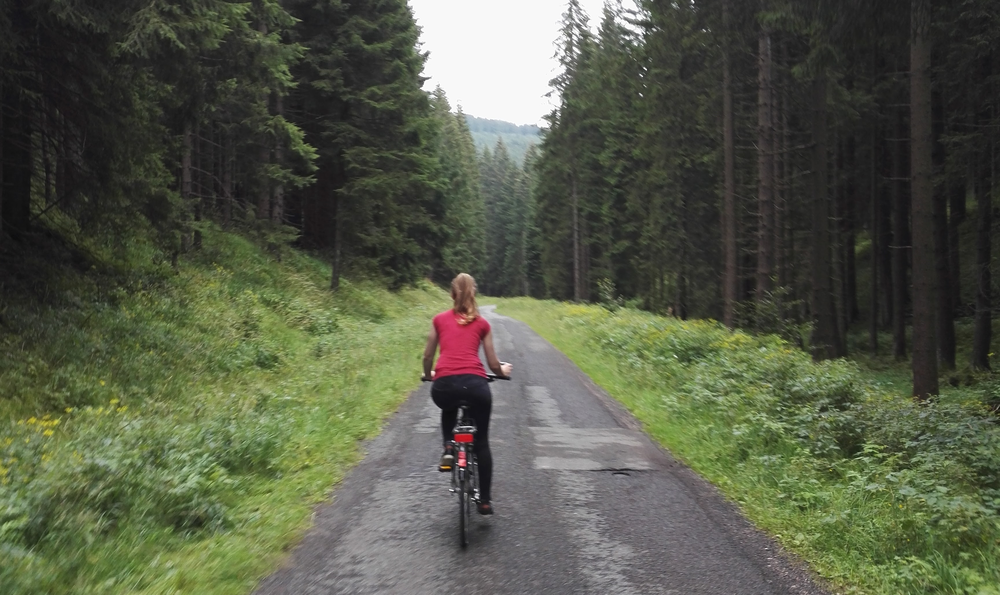

Who am I?
I am Charlotte Mears, Industrial Design student at University of Liverpool, currently in my second year of study.
How did I get here?
Originally from Liverpool United kingdom, I have always been a creative. Originally I was an artist having studied the subject at Liverpool City College and University of Reading.
That was until I was inspired to change, a fateful trip the Design Museum in London triggered an interest that had been in me without even knowing it. I made the switch to become a Design Engineer. Having an engineer for a father this was an obvious choice and a challenge I have come to love.
What am I up to?
I am currently doing a sketch a day to practise and improve over summer. As I've just finished year one of my degree and am trying to keep the skills I've learnt fresh and possibly improve on them in time for next semester.
In the coming months I will be applying for year long work placements to begin upon completion of year two of my degree.
Random facts about me
I was previoulsy in the RAF cadets, which gave me the opportunity to solo fly planes and gliders!
I've ran the Liverpool half marathon as well as the Liverpool spring 10k, and I am currently looking to run more!
I have volunteered working in the middle of the German Thuringian forrest, which was an amazing experience, I got to do construction work on an architects project while also tending to their goats, horses and chickens!
Finally, if you have read this far, I would like to thank you for spending the time to visit my website and get to know a little more about me. If you would look to give me any feedback, or enquire about anything, I would be more than happy to here from you. For info on how to get in touch click here
In the coming months I will be applying for year long work placements to begin upon completion of year two of my degree.